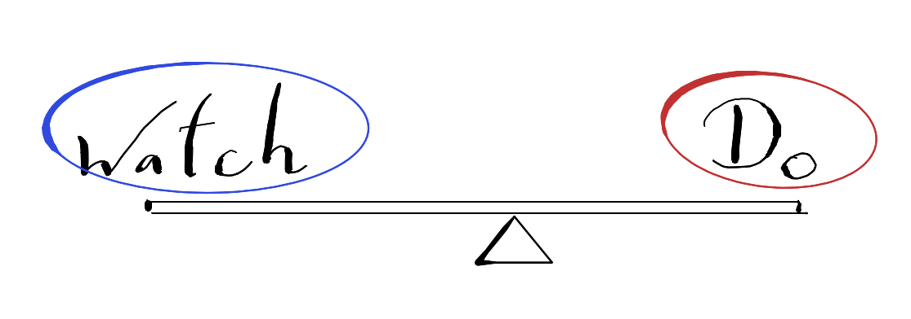
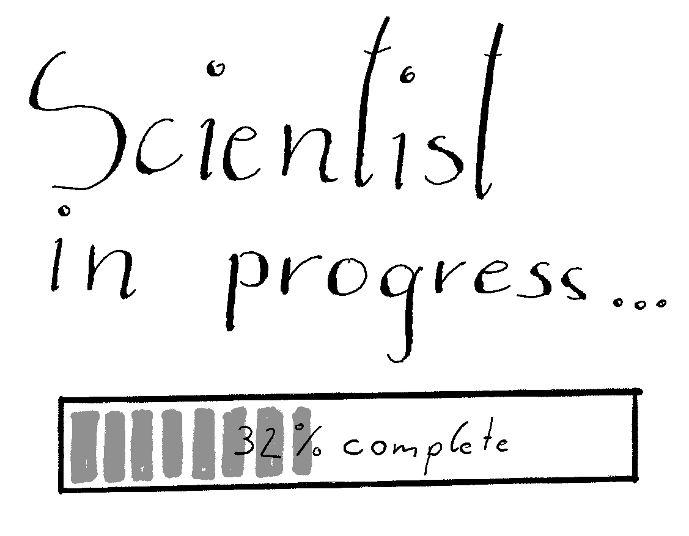

The Moving Science Blog
Home
Categories
All
(8)
AI
(1)
archive
(1)
blog
(3)
collaboration
(1)
concept
(2)
exercise
(3)
intro
(1)
meaning
(1)
motivation
(1)
news
(2)
science
(3)
training
(3)
An Experiment on Attention
Today, I want to share a form of movement practice I regularly engage in. This is not completely separate from a training perspective, but I primarily think of it as a form…
Jul 7, 2026
Peter Raidl

Intervene When Necessary - Not When Bored
Coaches regularly introduce fancy exercise variations or new complex programs, even when there is no objective reason to do so. If the old program works well and produces…
Feb 24, 2026
Peter Raidl
The Non-functionality of Exercise
training
exercise
meaning
motivation
In the early 2000s, the term “Functional Training” was in widespread use. The pioneers who brought functional training to the broader community (most notably Gray Cook, Mike…
May 3, 2025
Peter Raidl
Exercise Program by AI
training
exercise
AI
At the beginning of each semester, I ask students what they expect learning in the seminar
Training Processes
that I teach at the University of Vienna. The answer I hear…
Apr 14, 2025
Peter Raidl
A discussion of Training
blog
science
training
exercise
concept
Most of my extensive (formal and informal) education falls into the realm of training science. So I want to start right there and give you a introduction to what I mean with
…
Apr 8, 2025
Peter Raidl
Outside Academia
news
blog
science
collaboration
As I have written on the front page, science and scholarship are activities of leisure. However, scientists must also live on something. Many of the known scientists of the…
Apr 6, 2025
Peter Raidl

Welcome to the Moving Science Blog
news
intro
What’s special about that blog? Honestly, I do not know yet! Maybe nothing, except that written blogs run out of fashion. I expect nobody to read it. This reduces the…
Oct 13, 2024
Peter Raidl
From the Archive: Das eigene Weltbild zum Einsturz bringen
blog
science
concept
archive
Jene Person, welche die eigene Meinung nach der Lektüre eines einzelnen wissenschaftlichen Artikels um 180 Grad dreht, hat wahrscheinlich einfach noch wenig Wissen und…
Aug 2, 2020
Peter Raidl, Chrisoph Humnig
No matching items
Reuse
CC BY 4.0